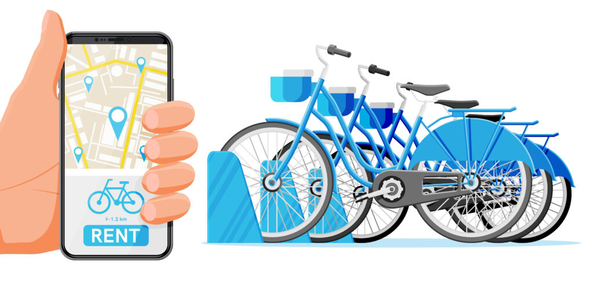

O propósito deste projeto é classificar indivíduos com base em sua propensão para adquirir um novo leitor digital, visando aprimorar a eficácia das campanhas de marketing.
Objetivo desse projeto é implementar um modelo de regressão para prever o volume de precipitação de chuva diária na cidade de Belo Horizonte, utilizando dados metereológicos de cidades vizinhas.

O objetivo deste projeto é desenvolver uma solução para prever a demanda por aluguel de bicicletas em um sistema de compartilhamento de bicicletas. A solução será baseada na combinação de dados históricos de uso com dados meteorológicos.

Nesse projeto utilizamos biblioteca Vader(LeIA), para realizar análise de sentimentos, classificando textos em categorias como Positivo, Negativo ou Neutro.
O objetivo desse projeto é encontrar grupos distintos de indivíduos (clusters) e estabelecer limites entre o grupo saudável e o grupo de risco.

Modelos de aprendizado supervisionado e não supervisionado.

Modelando e preparando os dados para criação de modelo de Machine Learning.
Análise exploratória
Python
Realizando uma análise exploratória da base de dados do titanic.

Utilizando o SQL Server para uma análise exploratória dos dados de covid.

Objetivo do projeto é criar uma solução de análise de dados usando o Power BI. A ideia simula diferentes situações a ajudar os líderes a decidirem sobre o futuro dos produtos e lojas.

Utilizando o SQL Server para uma limpeza dos dados, tornando os dados mais utilizáveis.
Criando visuais no power bi do projeto da DIO no bootcamp santander.